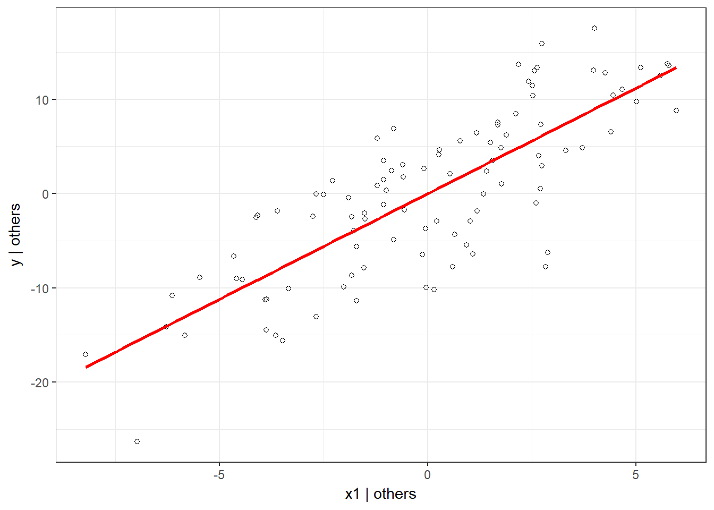
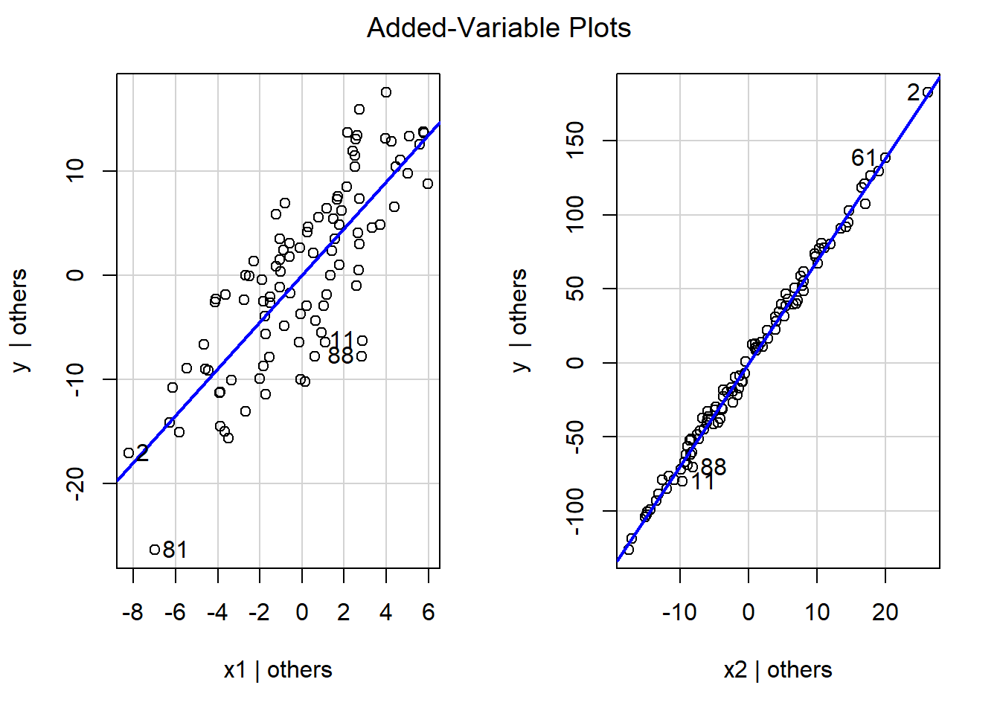

13 Appendix
In order to understand the coefficients in the multiple regression we can derive them separtely. We have already seen that in the univariate case:
\[ \hat{\beta_1}=\frac{COV_{XY}}{s_x^2} \]
We have also seen that we can isolate the partial effect of a single variable in a multiple regression. Specifically, we can calculate the coefficient of the i-th variable as
\[ \hat{\beta_{i}} = {COV(\tilde{Y_{i}}, \tilde{X_{i}}) \over V(\tilde{X_i})} \]
where \(\tilde{Y_{i}}\) is the residual from the regression of \(Y\) on all variables except for the i-th and \(\tilde{X_i}\) is the residual from the regression of \(X_i\) on all other variables. Let’s illustrate this with an example.
We have added some randomness through the rnorm command so the coefficients are not exactly as we set them but close. Clearly x1 and x2 have partial influence on y.
##
## Call:
## lm(formula = y ~ x1 + x2)
##
## Residuals:
## Min 1Q Median 3Q Max
## -14.114 -3.391 0.874 3.799 9.772
##
## Coefficients:
## Estimate Std. Error t value Pr(>|t|)
## (Intercept) 51.8193 1.3445 38.5 <0.0000000000000002 ***
## x1 2.2403 0.1703 13.2 <0.0000000000000002 ***
## x2 6.9250 0.0566 122.4 <0.0000000000000002 ***
## ---
## Signif. codes: 0 '***' 0.001 '**' 0.01 '*' 0.05 '.' 0.1 ' ' 1
##
## Residual standard error: 5.3 on 97 degrees of freedom
## Multiple R-squared: 1, Adjusted R-squared: 1
## F-statistic: 2.1e+05 on 2 and 97 DF, p-value: <0.0000000000000002To see the partial effect of x1 we run regressions for x1 on x2, as well as y on x2 and obtain the residuals \(\tilde{x1}\) and \(\tilde{x2}\). Notice that x1 is highly correlated with x2.
##
## Call:
## lm(formula = x1 ~ x2)
##
## Residuals:
## Min 1Q Median 3Q Max
## -8.225 -1.851 0.179 2.510 5.968
##
## Coefficients:
## Estimate Std. Error t value Pr(>|t|)
## (Intercept) -6.904 0.386 -17.9 <0.0000000000000002 ***
## x2 0.325 0.007 46.4 <0.0000000000000002 ***
## ---
## Signif. codes: 0 '***' 0.001 '**' 0.01 '*' 0.05 '.' 0.1 ' ' 1
##
## Residual standard error: 3.2 on 98 degrees of freedom
## Multiple R-squared: 0.957, Adjusted R-squared: 0.956
## F-statistic: 2.16e+03 on 1 and 98 DF, p-value: <0.0000000000000002We can use the residuals to create the partial plots as seen above.

And the regression of the residuals of y on x1 yields the same coefficient as in the original regression (minus the rounding errors).
##
## Call:
## lm(formula = tildeY1 ~ tildeX1 - 1)
##
## Residuals:
## Min 1Q Median 3Q Max
## -14.114 -3.391 0.874 3.799 9.772
##
## Coefficients:
## Estimate Std. Error t value Pr(>|t|)
## tildeX1 2.240 0.169 13.3 <0.0000000000000002 ***
## ---
## Signif. codes: 0 '***' 0.001 '**' 0.01 '*' 0.05 '.' 0.1 ' ' 1
##
## Residual standard error: 5.3 on 99 degrees of freedom
## Multiple R-squared: 0.641, Adjusted R-squared: 0.637
## F-statistic: 177 on 1 and 99 DF, p-value: <0.0000000000000002## [1] "Coefficient using the partial covariance:"## [1] 2.2